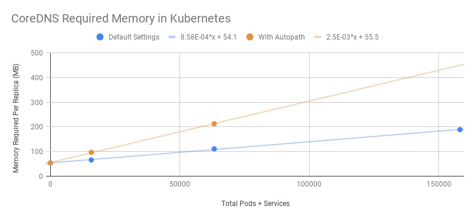

- 00 为什么我们要学习 Kubernetes 技术.md.html
- 01 重新认识 Kubernetes 的核心组件.md.html
- 02 深入理解 Kubernets 的编排对象.md.html
- 03 DevOps 场景下落地 K8s 的困难分析.md.html
- 04 微服务应用场景下落地 K8s 的困难分析.md.html
- 05 解决 K8s 落地难题的方法论提炼.md.html
- 06 练习篇：K8s 核心实践知识掌握.md.html
- 07 容器引擎 containerd 落地实践.md.html
- 08 K8s 集群安装工具 kubeadm 的落地实践.md.html
- 09 南北向流量组件 IPVS 的落地实践.md.html
- 10 东西向流量组件 Calico 的落地实践.md.html
- 11 服务发现 DNS 的落地实践.md.html
- 12 练习篇：K8s 集群配置测验.md.html
- 13 理解对方暴露服务的对象 Ingress 和 Service.md.html
- 14 应用网关 OpenResty 对接 K8s 实践.md.html
- 15 Service 层引流技术实践.md.html
- 16 Cilium 容器网络的落地实践.md.html
- 17 应用流量的优雅无损切换实践.md.html
- 18 练习篇：应用流量无损切换技术测验.md.html
- 19 使用 Rook 构建生产可用存储环境实践.md.html
- 20 有状态应用的默认特性落地分析.md.html
- 21 案例：分布式 MySQL 集群工具 Vitess 实践分析.md.html
- 22 存储对象 PV、PVC、Storage Classes 的管理落地实践.md.html
- 23 K8s 集群中存储对象灾备的落地实践.md.html
- 24 练习篇：K8s 集群配置测验.md.html
- 捐赠
11 服务发现 DNS 的落地实践
DNS 服务是 Kubernetes 内置的服务发现组件，它方便容器服务可以通过发布的唯一 App 名字找到对方的端口服务，再也不需要维护服务对应的 IP 关系。这个对传统企业内部的运维习惯也是有一些变革的。一般传统企业内部都会维护一套 CMDB 系统，专门来维护服务器和 IP 地址的对应关系，方便规划管理好应用服务集群。当落地 K8s 集群之后，因为应用容器的 IP 生命周期短暂，通过 App 名字来识别服务其实对运维和开发都会更方便。所以本篇就是结合实际的需求场景给大家详细介绍 DNS 的使用实践。
CoreDNS 介绍
Kubernetes 早期的 DNS 组件叫 KubeDNS。CNCF 社区后来引入了更加成熟的开源项目 CoreDNS 替换了 KubeDNS。所以我们现在提到 KubeDNS，其实默认指代的是 CoreDNS 项目。在 Kubernetes 中部署 CoreDNS 作为集群内的 DNS 服务有很多种方式，例如可以使用官方 Helm Chart 库中的 Helm Chart 部署，具体可查看 CoreDNS Helm Chart。
$ helm install --name coredns --namespace=kube-system stable/coredns
查看 coredns 的 Pod，确认所有 Pod 都处于 Running 状态：
kubectl get pods -n kube-system -l k8s-app=kube-dns
NAME READY STATUS RESTARTS AGE
coredns-699477c54d-9fsl2 1/1 Running 0 5m
coredns-699477c54d-d6tb2 1/1 Running 0 5m
coredns-699477c54d-qh54v 1/1 Running 0 5m
coredns-699477c54d-vvqj9 1/1 Running 0 5m
coredns-699477c54d-xcv8h 1/1 Running 0 6m
测试一下 DNS 功能是否好用：
kubectl run curl --image=radial/busyboxplus:curl -i --tty
nslookup kubernetes.default
Server: 10.96.0.10
Address 1: 10.96.0.10 kube-dns.kube-system.svc.cluster.local
Name: kubernetes
Address 1: 10.96.0.1 kubernetes.default.svc.cluster.local
服务发现规则
DNS 支持的服务发现是支持 Service 和 Pod 的。它的规则如下。
Services
A 记录：
- Service（headless Service 除外）将被分配一个 DNS A 记录，格式为 my-svc.my-namespace.svc.cluster.local。该 DNS 记录解析到 Service 的 ClusterIP。
- Headless Service（没有 ClusterIP）也将被分配一个 DNS A 记录，格式为 my-svc.my-namespace.svc.cluster.local。该 DNS 记录解析到 Service 所选中的一组 Pod 的 IP 地址的集合。调用者应该使用该 IP 地址集合，或者按照轮询（round-robin）的方式从集合中选择一个 IP 地址使用。
SRV 记录：Service（含 headless Service）的命名端口（有 name 的端口）将被分配一个 SRV 记录，其格式为 _my-port-name._my-port-protocol.my-svc.my-namespace.svc.cluster.local。
- 对于一个普通 Service（非 headless Service），该 SRV 记录解析到其端口号和域名 my-svc.my-namespace.svc.cluster.local。
- 对于一个 Headless Service，该 SRV 记录解析到多个结果：每一个结果都对应该 Service 的一个后端 Pod，包含其端口号和 Pod 的域名 auto-generated-pod-name.my-svc.my-namespace.svc.cluster.local。
Pods
Kubernetes 在创建 Pod 时，将 Pod 定义中的 metadata.name 的值作为 Pod 实例的 hostname。
- Pod 定义中有一个可选字段 spec.hostname 可用来直接指定 Pod 的 hostname。例如，某 Pod 的 spec.hostname 字段被设置为 my-host，则该 Pod 创建后 hostname 将被设为 my-host。
- Pod 定义中还有一个可选字段 spec.subdomain 可用来指定 Pod 的 subdomain。例如，名称空间 my-namespace 中，某 Pod 的 hostname 为 foo，并且 subdomain 为 bar，则该 Pod 的完整域名（FQDN）为 foo.bar.my-namespace.svc.cluster.local。
备注：A 记录不是根据 Pod name 创建的，而是根据 hostname 创建的。如果一个 Pod 没有 hostname 只有 subdomain，则 Kubernetes 将只为其 headless Service 创建一个 A 记录 default-subdomain.my-namespace.svc.cluster-domain.example，该记录指向 Pod 的 IP 地址。
DNS 优化
社区根据压测数据，对 CoreDNS 需要的内存提供了一个计算公式：
MB required (default settings) = (Pods + Services) / 1000 + 54
注解：
- 30 MB 留给缓存，默认缓存大小为 1 万条记录。
- 5 MB 留给应用查询操作使用，默认压测单例 CoreDNS 支持大约 30K QPS。

集成外部 DNS 服务
我们在使用 Kubernetes 的场景中，企业经常已经默认有了自己的 DNS 服务，在部署容器集群的时候，肯定期望和外置的 DNS 服务做一些集成，方便企业内部的使用。
默认 DNS 查询策略是 ClusterFirst，也就是查询应用名字首先是让集群内部的 CoreDNS 提供名字服务。而我们需要解决的是让指定的别名访问外部的服务，这个时候就需要做如下配置：
apiVersion: v1
kind: ConfigMap
metadata:
name: kube-dns
namespace: kube-system
data:
stubDomains: |
{"consul.local": ["10.150.0.1"]}
upstreamNameservers: |
["8.8.8.8", "8.8.4.4"]
上面这个例子很好的解释了外置 Consul 服务，也可以很好地集成到 Kubernetes 服务中。如果是正式的域名，直接转向查询 8.8.8.8 上游 DNS 服务器了。
总结
CoreDNS 是 Kubernetes 集群中最核心，也是最容易理解的一个组件，它的功能单一，很容易上手。但是名字解析的规则还是需要大家熟悉，避免一些不必要的认知错误。
参考：
© 2019 - 2023 Liangliang Lee. Powered by gin and hexo-theme-book.